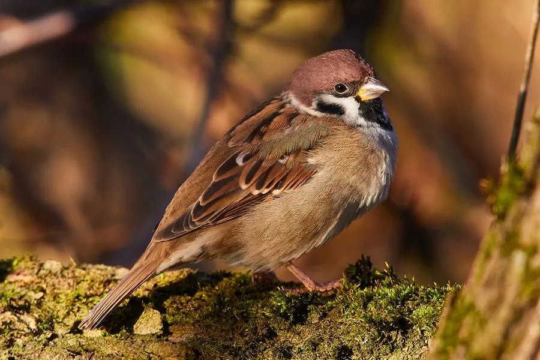

鸟类 · 动物界
树麻雀 Passer montanus

在人类身边最常见的麻雀，头顶栗褐色、脸颊白斑上带黑点，喜欢在屋檐瓦缝和树洞里筑巢，常成群活动。
- 分类
- 门脊索动物门纲鸟纲目雀形目科雀科属麻雀属
- 栖息环境
- 城镇、村庄、农田、果园和公园，几乎完全伴人而居
- 地理分布
- 欧亚大陆广布，从欧洲到东亚、东南亚，中国各地均有分布
- 保护级别
- IUCN 无危（LC）；中国“三有”保护动物
物种志
树麻雀体长 12–14 cm，翼展 20–22 cm，体重 19–26 g。它的头顶呈栗褐色，脸颊白色并有一块明显的黑色耳斑，喉部也有黑色小斑，背部褐色并带黑色纵纹，腹部灰白色。树麻雀雌雄羽色几乎相同，这与雄性羽色更鲜艳的家麻雀不同。
树麻雀广泛分布于欧亚大陆，从欧洲一直延伸到东亚和东南亚，中国各地都有，是典型的伴人鸟类。它们栖息在城镇、村庄、农田、果园和公园，几乎完全在人类环境中生活，吃谷物、草籽和果实，育雏期则大量捕食昆虫。每年繁殖 2–3 窝，在屋檐缝隙、瓦洞、树洞和人工巢箱中营巢，每窝产卵 4–6 枚，孵化 11–13 天。20 世纪 50 年代中国曾把麻雀列为“四害”大量捕杀，后来发现它在育雏期能消灭大量害虫，于是停止了这一做法。
形态与习性
- 食性谷物、草籽和果实，育雏期大量捕食昆虫
- 体长12–14 cm
- 翼展20–22 cm
- 体重19–26 g
- 繁殖每窝 4–6 枚卵，孵化 11–13 天，每年 2–3 窝
- 巢址屋檐缝隙、瓦洞、树洞和人工巢箱
- 寿命野外约 3 年
趣味知识
- 树麻雀雌雄羽色几乎相同，耳羽上的黑斑是辨识它的关键特征。
- 20 世纪 50 年代中国曾把麻雀列为“四害”大量捕杀，后来发现它育雏期捕食大量害虫。
- 麻雀繁殖力强，一对亲鸟一年可繁殖 2–3 窝、养育十余只雏鸟。
- 它们喜欢集体洗沙浴，用细沙清理羽毛中的寄生虫。